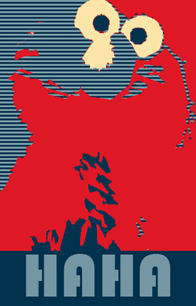
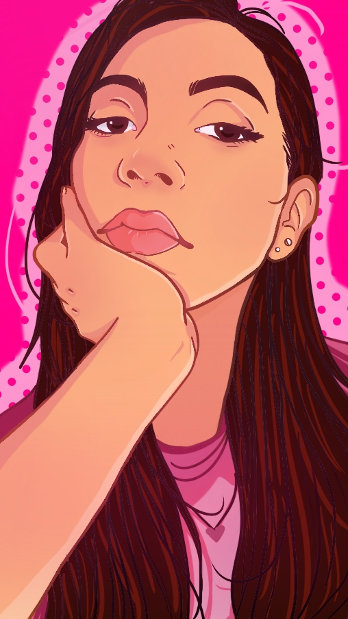
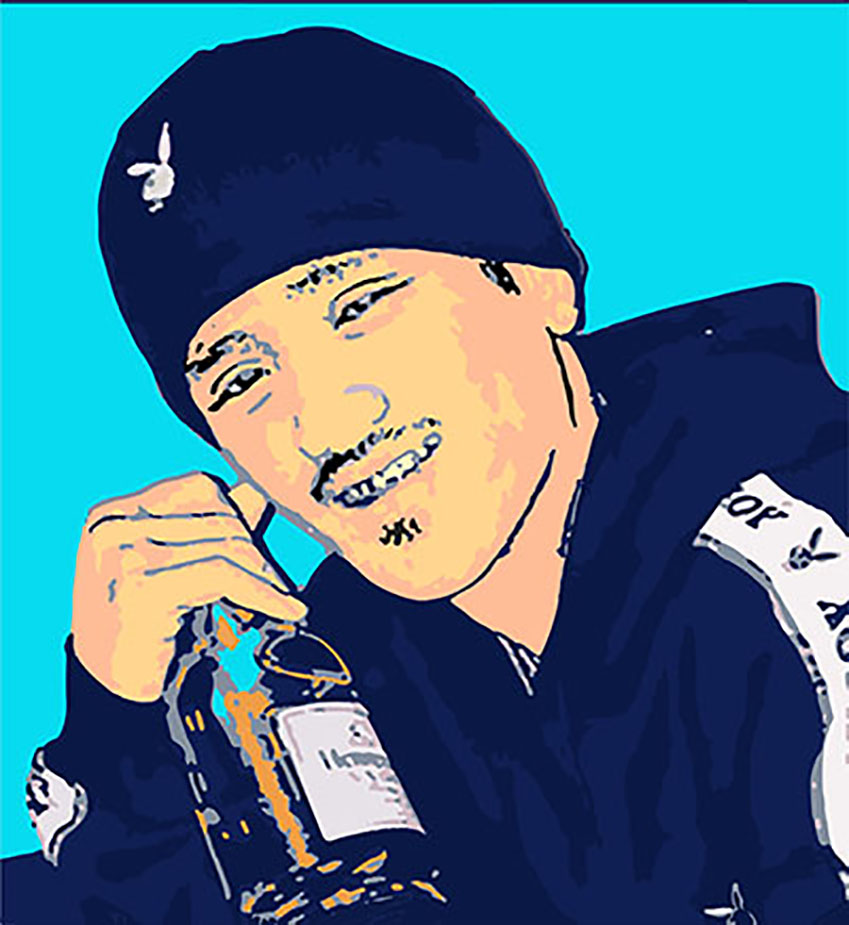
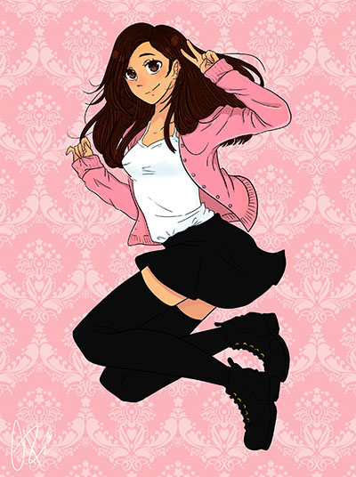
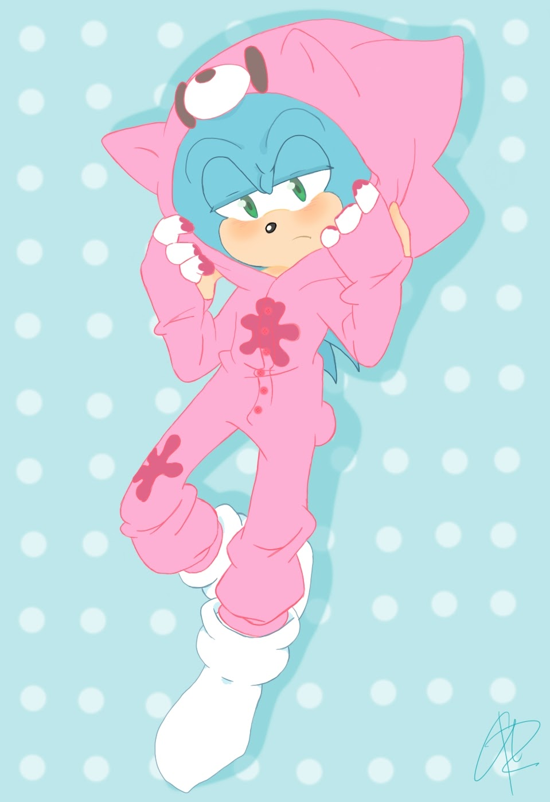
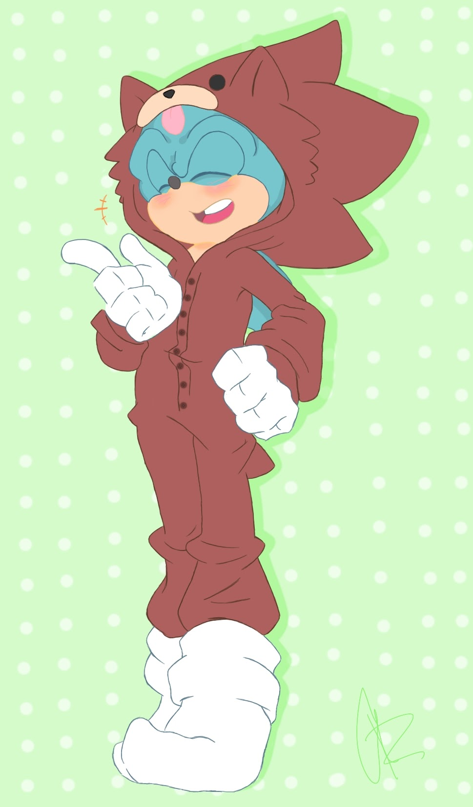
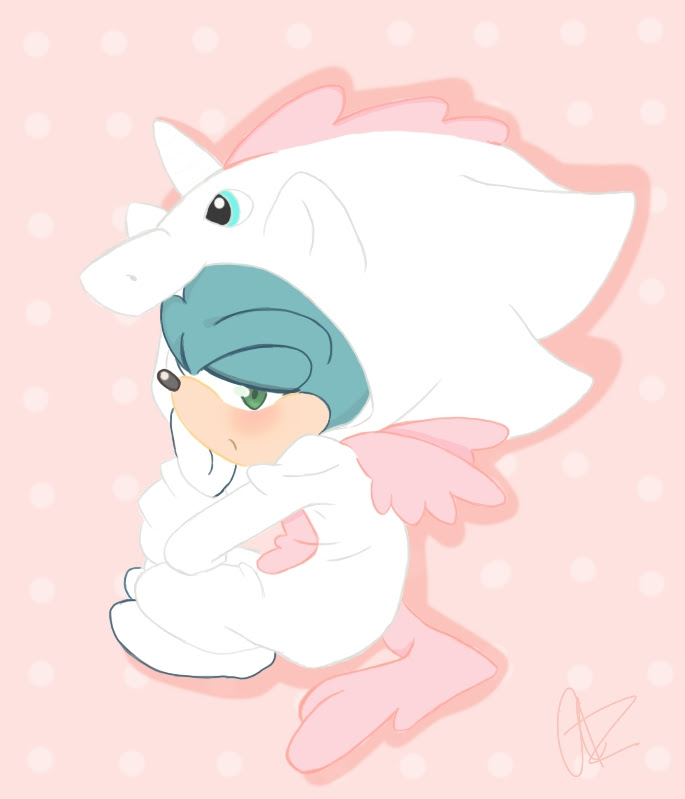

Ariana Rojas
Digital Portfolio
ECHO series
Audacity
A series done using the audio program Audacity. I used an image I've done previously during highschool, and decided to add a glitch effect to this image as the character in my image is suppose to represent a glitch.
HaHa
Illustrator
Inspired from Barack Obama's Famous Hope poster. I wanted to Use Elmo instead as a way to parody it. I wanted to make it look like you should vote for elmo instead.

SpeedSenses
photoshop
Inspired from the classic game Sonic The Hedgehog. I was challanged to do a remix image, which means to take something that is already done and parodying it. For that project I wanted to make a hyper realistic version of the beloved stage Green Hill Zone by using real world things and combining it like a collage and making it look like the game.

Wonderland
sketchbook
Fascinated by Alice in Wonderlands aethestic and theme. I wanted to make a digital artwork of my version as the rabbit who checks the time. But removing the colors that make wonderland so wonderful, and make it black and white.

untitled
Sketchbook
Drawing done just by inspiration and also just to draw a character I have made who doesn't like to show his face. While wearing a yukata that is usually worn during Japanese festivals.
Don't Look At Me.
Sketchbook
Inspired by one of the well known pop artist, Roy Lichenstein. I wanted to take my own version of comic book art mixing it with a self portrait.
Portrait
Sketchbook
Another image og myself that I wanted to be done in a pop art style. I wanted to incorporate my favorite color, which is hot pink. The pose is just a normal pose i tend to do when I'm just bored.
For Joshua
Illustrator
An image Ive done in rememberance to a close friend of mine, who sadly left this world too soon. I wanted to make an image of him in the best way I could and that being thhrough pop art. Picking a pose that represented him perfectly while he was still so full of life.
Redrawn
Sketchbook
This is a redrawn image of another older image that I have drawn previously during highschool. Lately I've been wanting to redraw older drawings and see how much I have imprived in my art style.

Tears Left for Me
Sketchbook
Me being surrounded by thorns and red roses, which symbolize to me love and maturity. I am holding one gold rose even though it is withering. Representing me and the struggles I had to bare growing up.

Saved me
Skecthbook
A drawing of me when I was in elementary school. Which is the time I started to draw. The things that drove me to improve in my drawings was The video Games Sonic The Hedgehog. As the game graphics begin to improve so did my drawing styles.
Playstation Series
Sketchbook
Self-images of myself inspired by Japanese style anime. I wanted to create my own version of myself as sonic. All of these images were drawn years apart. Were all created for my PSN persona.

Freedom Fighter
Sketchbook
The loved video character Sonic The Hedgehog doing what he is well known for, which is Running through green hill zone. I wanted to visualize this as a digital drawing, and make it as colorful as it is in the video game.
  Onesie Series
Skecthbook
I had three fun onesies that I own and I had the idea that came into my mind of "what if sonic wore these?" leading me to draw very brightly and cute digital drawings of the blue bur in my favorite onesies.